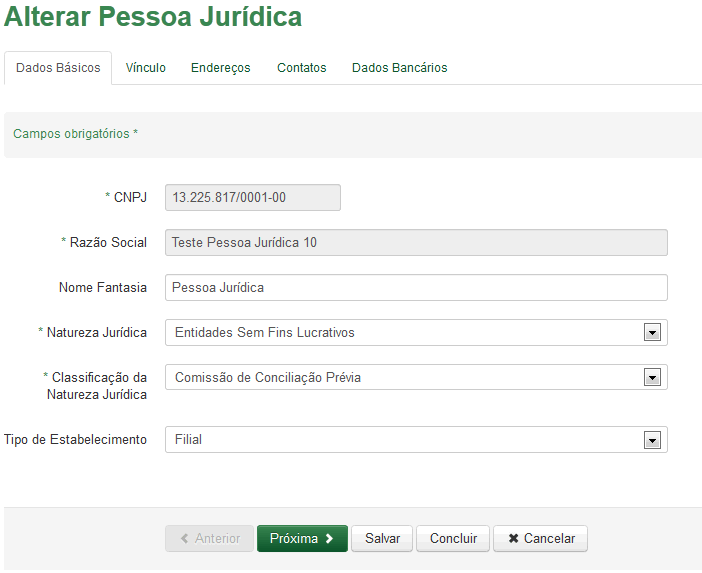

Pessoa Jurídica
Informe os dados, observando que os campos com asterísco (*) são de preenchimento obrigatório.
Acione a opção  para apresentar o resultado da pesquisa de Pessoa Jurídica.
para apresentar o resultado da pesquisa de Pessoa Jurídica.
Para [limpar] o formulário de pesquisa clique em  .
.
Para visualizar Pessoa Jurídica, acione a opção  .
.
Para Reativar Pessoa Jurídica, acione a opção  , será alterado o Status para Ativo.
, será alterado o Status para Ativo.
Para Inativar Pessoa Jurídica, acione a opção  , será alterado o Status para Inativo.
, será alterado o Status para Inativo.
Para alterar Pessoa Jurídica, acione a opção  preencha o formulário conforme figura abaixo:
preencha o formulário conforme figura abaixo:

Para seguir para próxima tela, acione a opção ;
Para salvar as informações editadas, acione a opção 
Para finalizar o registro dos dados informados, acione a opção  ;
;
Para desistir do cadastro, acione a opção  o sistema retorna para a tela "Pesquisar Pessoa".
o sistema retorna para a tela "Pesquisar Pessoa".
Para controle da quantidade dos registros da pesquisa clique em .
Navegue pelas páginas da pesquisa utilizando:  .
.

Created with the Personal Edition of HelpNDoc: Easily create EPub books